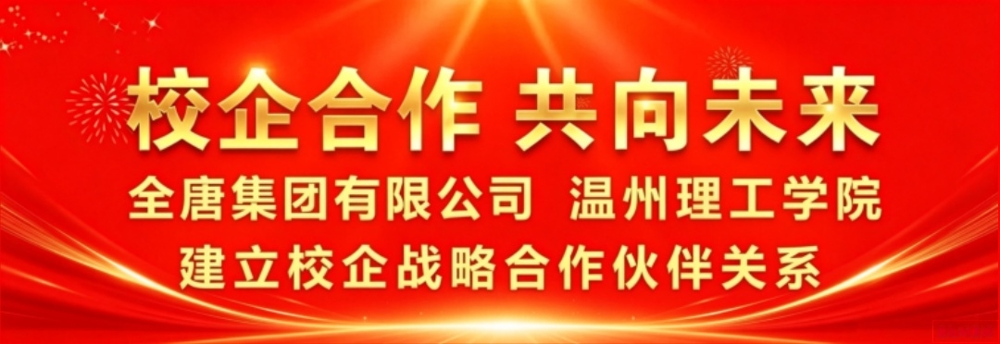
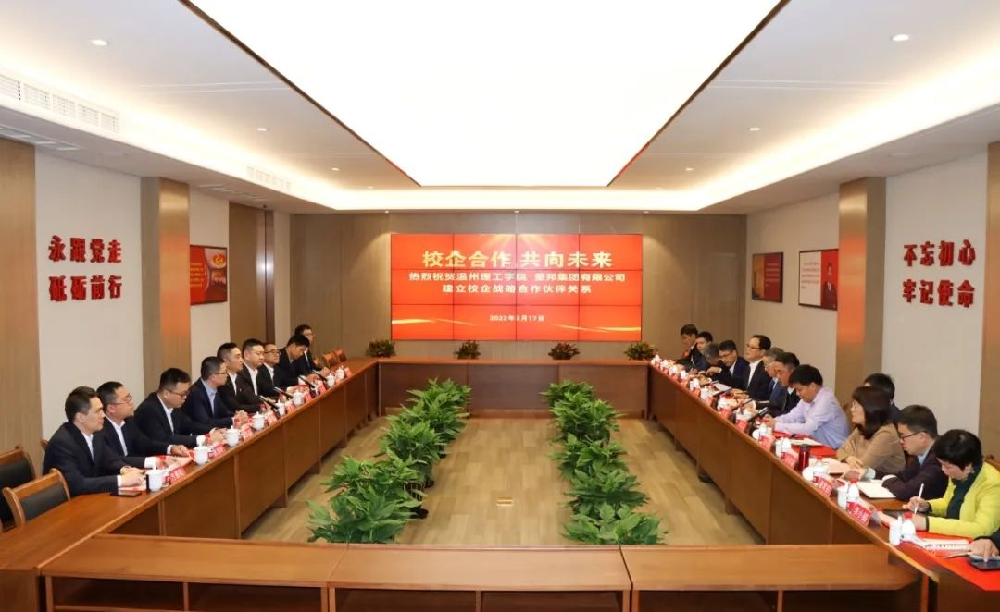

تعاون بين الجامعة والشركة نحو المستقبل

3 17في ذلك اليوم، توصلت مجموعة KIWL ومعهد ونتشو التقني إلى تعاون استراتيجي بين الجامعة والمؤسسة، لتحقيق تكامل المزايا وتبادل الموارد والفوز المتبادل والتنمية المشتركة.
زار الأمين تشيان تشيانغ، والرئيس ونائب الأمين تشو ونلونغ، وأمين اللجنة التأديبية غوو جينغ، ونواب الرئيس وو شيانغ بينغ وهو شينغن وسون فورونغ، وعضو اللجنة ورئيس قسم التنظيم جين تشينغ ليانغ وغيرهم مجموعة KIWL، واطلعوا على مدرسة تاريخ الحزب، وقاعة العلوم والتكنولوجيا، وخط الإنتاج الذكي ومركز الأنشطة. وفي قاعة زوني للاجتماعات بمدرسة تاريخ الحزب في مجموعة KIWL، أقام الطرفان حفل التوقيع وكشف النقاب. وكشف الأمين تشيان تشيانغ والأمين جيانغ وي معًا النقاب عن“مجتمع بناء الحزب المشترك بين الجامعة والشركة”كشف النقاب؛ ووقّع نائب الرئيس هو شينغن والمدير العام جيانغ هونغ اتفاقية التعاون الاستراتيجي بين الجامعة والمؤسسة؛ وكشف نائب الرئيس سون فورونغ والمدير العام جيانغ هونغ معًا النقاب عن“قاعدة البحث والتطوير والإنتاج”كشف النقاب.
في التبادل خلال الندوة، قدّم الطرفان مسارات تطورهما وأعمال بناء الحزب وخططهما المستقبلية، وأجريا مناقشات معمّقة حول خطط التعاون الاستراتيجي في تنمية المواهب ودمج الصناعة والتعليم والبحث والتطوير العلمي وبناء الحزب المشترك..
في 13 فبراير، زار رئيس اللجنة السياسية الاستشارية لمدينة ونتشو تشن زورونغ KIWL للإشراف على إجراءات الوقاية عند استئناف الإنتاج. اللجنة في ونتشو“الكفاح وريادة الأعمال، الابتكار والذكاء، قيادة بناء الحزب، وتعزيز المؤسسة بالثقافة”قفزة تنموية كبيرة؛ واستجاب معهد ونتشو التقني بنشاط لدعوة اللجنة البلدية والحكومة البلدية، والإصرار على دخول الجامعة إلى المؤسسة، وتعزيز التعاون بين الجامعة والمؤسسة، وتعميق دمج الصناعة والتعليم؛ والتعاون مع KIWL يهدف إلى توفير ابتكار عملي للتعليم والبحث في المدرسة، وتحقيق“الإنتاج والتعليم والبحث”التنمية الإيجابية و“الجامعة والشركة والطلاب”فوز متعدد الأطراف؛ وبإقامة مجتمع بناء الحزب مع KIWL، يساعد على استكشاف أفكار جديدة لبناء الحزب على المستوى الأساسي، وتشكيل نمط جديد لبناء الحزب على المستوى الأساسي.
KIWLأشار رئيس مجلس الإدارة جيانغ وي للمجموعة إلى أن KIWL تولي اهتمامًا كبيرًا للكوادر الفنية المتخصصة عالية الجودة، وتوفر منصات لإظهار القدرات وتحقيق مستقبل مشترك؛ وأن هذا التعاون والتبادل المعمّق مع معهد ونتشو التقني يجمع بين الإنتاج والتشغيل والبحث العلمي والممارسة، مع تكامل نقاط القوة والمزايا؛ ويأمل من خلال KIWL“الجين الأحمر والعناصر المحلية”，جذب الطلاب المتميزين في العلوم والهندسة للانضمام إلى KIWL، وتعزيز التواصل والتعاون بين الجامعة والمؤسسة، واستغلال مزايا الابتكار العلمي للجامعة، وتلبية احتياجات التنمية عالية الجودة للمؤسسة.
بالنظر إلى المستقبل، يتطلع الطرفان بصدق إلى أن يحقق هذا التعاون بين الجامعة والمؤسسة التقدم المشترك، واستغلال مزايا كل طرف، وتحقيق الفوز المشترك من خلال التبادل المتبادل وبناء الأحلام معًا، بما يساعد على تنمية المنطقة.



واتساب

امسح الرمز
لتابعنا